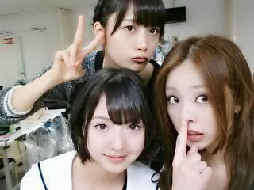

| 2014/04 02 Wed | 大阪の美味しいすき焼き..* ろってぃ− |
こんばんわ !! Rottyです ..*
今日も1日お疲れ様でした!!
今日は楽しい1日となりました.
キャプれいか と ろってぃ−
キャプれいかは、頑張って前髪を伸ばしています

ろってぃ−は伸びるペースが早過ぎていつもチョビチョビ切ってます えへ ２枚目.*いぇあ
まあやがblogにあれ書きよったよw
私達のくだらない冗談ごっこの話を、、、

そーいや三日前の晩、まあやに縄跳びやろ〜..*って誘われて一緒に縄跳びやりました 笑 まだまだ若いぜぇ〜(*´ー｀*)
川後 & まいまい お誕生日おめでとう!!
川後 ろってぃ−
まいまい まあや ろってぃ−

皆可愛いね..* 川後とまいまいにとって幸せな１年になりますように...
また更新致します...
おやすみなさい♪のし
コメント(145)
2014/04/02 00:30